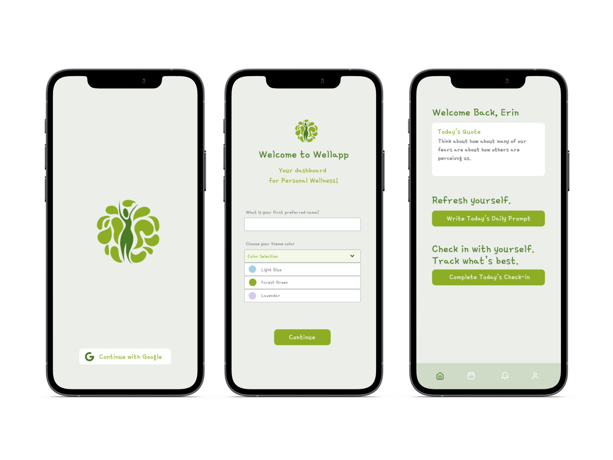
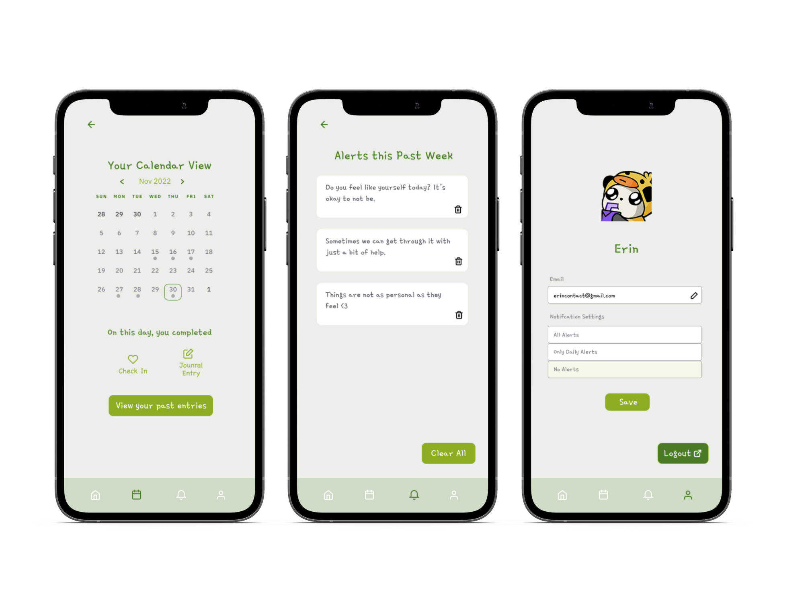
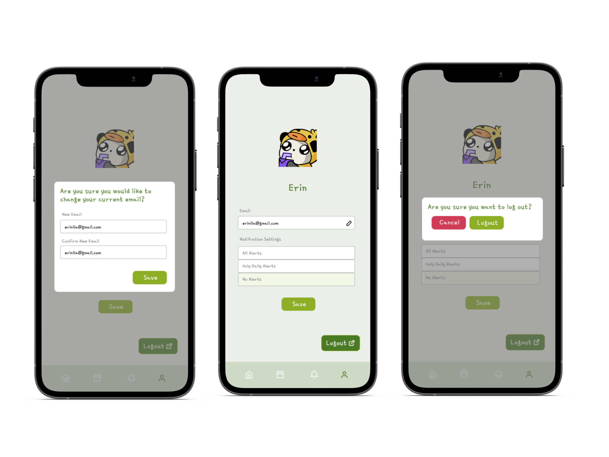

Wellapp
Wellapp is an application mockup for IS 226 Intro to Human Computer Interaction at the University of Illinois. With a team, we came up with a solution to help college students improve and keep track of their mental health.
- Role
- Designer
- Team
- Brayden Riesberg
- Timeline
- Aug 2022 - Dec 2022
- The Problem
- Currently, there is no application that helps college students keep track of their mental health specifically for college students. However, as college students, we can relate to the struggles of keeping track of our mental health and how it can be difficult to do so and its social stigma. Therefore, we have designed an application addressing this problem.
- Skills
-
Visual Design
User Research - Tools
-
Figma
FigJam
Miro

research - mental health and competitior analysis!
Despite mental health apps being present, students rarely adopt a consistent usage of the apps even when they are interested. Due to the stigma and social influence surrounding mental health apps, students that feel as if they are forced to use the app, suggested by health professionals, are less inclined to stick to it after initial use.
examples of other interactive systems
We looked at other interactive systems that are similar to our application. We looked at the strengths and weaknesses of each application and how we can improve on them.
With this app, we intend to show an improvement in engagement and consistency when compared to other apps of the same genre. In designing the app for students, our goal is to design an app that is as engaging and inviting as it is effective.
System Design Plan
As we think about designing a solution for our system, we have discussed what we will consider before we start wireframing
potential user interfaces.
We will consider the following questions when deciding on multiple approaches to our design system and user interface.
- What are the similarities between current popular apps?
- What is the preferred language of students/young adults from 18-26 (casual, to the point, informative)?
- Generally, what are the similarities between a college student on a mental health app versus a teenager on a mental health app?
- What are common themes in popular applications in terms of typography, colors, and layout?
HCI analysis and User Needs
As we develop a prototype and workflows for how our app might look and prioritize the needs of being fast-paced and
essentially “click-less”, we have conducted user interviews of college students at UIUC to understand their knowledge
of current mental health apps, and their usage of apps connected to their mental health.
The following are questions we asked during our user interviews:
- Have you used mental health apps in the Past? Why or why not?
- How much time on average do you spend on Social Media?
- What are your notification settings for apps? Do you change these manually or have the default?
Through our interviews, we noticed 4 themes that we could use to test out potential features in our
application that could be helpful when we create a mock application: Low maintenance, Innovation for mental health,
Commfortability, and Relatability.
key features!
at a glance ✧･ﾟ
These are some of the base case designs for Wellapp!
key screens ✧･ﾟ
These designs contain the calendar view, alerts, and profile.
additional modals ✧･ﾟ
These are some of the modals of Wellapp where users can login, and change their email.
Reflections
- Getting a sense of the audience is essential! I didn't know many things about tech x mental health if I didn't do the research!
- TIME is needed for a lot of design work alongside all the interviews. Time allocation is a big lesson for me!
- Getting feedback should be a main priortiy in a future case study to improve as much as podsible.